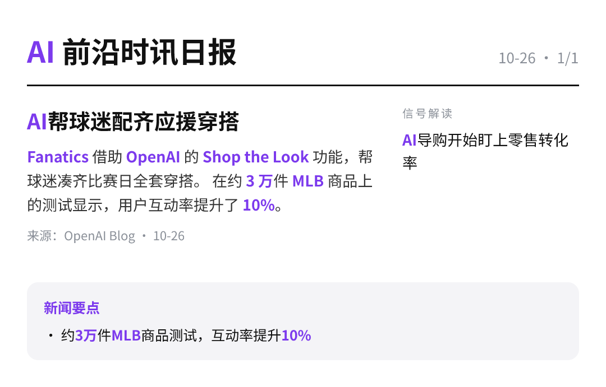

每天高频班次的 AI 领域要闻速览：发生了什么，为什么重要。

据量子位报道，中国新增云业务中近50%由同一家公司承接，占比之高令人意外，但也在情理之中。 这一集中度说明云市场份额正加速向头部玩家聚拢。
量子位17:02原文链接 ↗
量子位文章指出，人工智能正从人机“言传身教”式训练，走向能“触类旁通”的自学路径。 这意味着模型能力提升不再只依赖人工标注与示范，自我训练的比重正在上升。
量子位16:38原文链接 ↗
10月21日，2026世界智能网联汽车大会在北京召开，长安汽车赵非提出汽车将成为端侧物理AI规模最大的应用载体。 这一判断把智能汽车定位为物理世界AI落地的核心入口。
量子位16:04原文链接 ↗
Fanatics 借助 OpenAI 的 Shop the Look 功能，帮球迷凑齐比赛日全套穿搭。 在约 3 万件 MLB 商品上的测试显示，用户互动率提升了 10%。 这说明生成式 AI 正从聊天工具走进电商导购与转化环节。
OpenAI Blog15:00原文链接 ↗
香港科技大学与CMU联合岩山科技开源新模型，把KV Cache削减99%，单卡吞吐提升6倍。 单张卡即可同时支撑512路长推理任务。 长上下文推理的成本门槛因此大幅下探。
量子位14:45原文链接 ↗
一家中国公司的实时语音交互方案同时被OpenAI和Gemini选用。 文章将其视作对话式AI的风向标，实时语音正成为大模型竞争的新入口。
量子位14:38原文链接 ↗
无问芯穹与三体宇宙联合发布智子Agent 1.0，以多智能体协同为核心。 产品定位为角色Agent，把科幻IP形象做成可交互的智能体。
量子位14:33原文链接 ↗
讯飞发布Spark-X2.6，从训练、推理到端侧部署全栈自主可控，运行在全国产算力上。 官方送出10亿Tokens免费额度，实测能用纯代码生成3D故宫。
量子位14:31原文链接 ↗
Anthropic 已向美国证券交易委员会（SEC）提交 S-1 文件，为拟议中的首次公开募股迈出正式一步。 目前公开信息仅限提交文件本身，发行规模、估值与时间表均未披露。 若流程推进，它将成为少数进入公开资本市场的前沿大模型公司之一。
Anthropic News08:00原文链接 ↗
Grok 放出其 AI 生成《奥德赛》的首段七分钟画面。 外媒评价画面尚可，但若追求艺术性、灵感或人文趣味，会觉得吸引力有限。
TechCrunch AI05:31原文链接 ↗
阿波罗全球管理公司的经济学家指出，除科技行业之外，美国企业至今没有从人工智能投资中获得任何财务回报。 这一判断与持续涌入的巨额AI资本开支形成明显反差，也让企业端AI能否真正变现成为下一阶段的关注焦点。
TechCrunch AI00:57原文链接 ↗